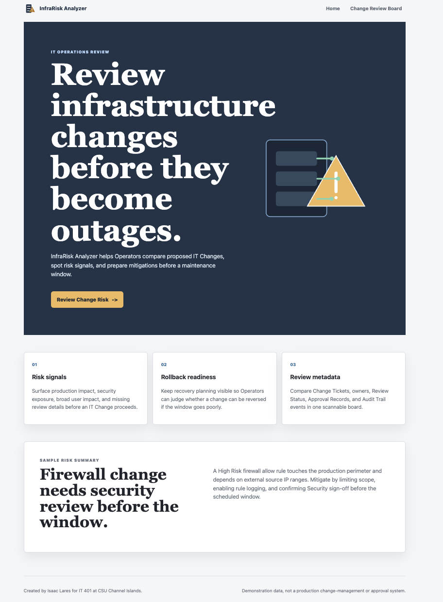
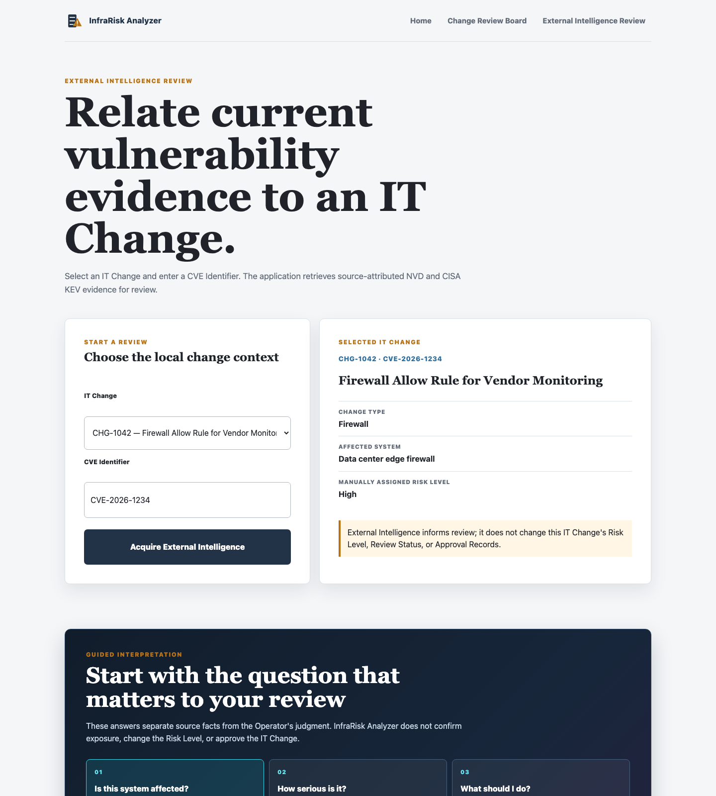

External intelligence for IT operations
Review infrastructure changes before they become outages.
InfraRisk Analyzer extends the Assignment 1 Change Review Board with a request-time External Intelligence Review. An Operator selects a locally stored IT Change and enters a CVE Identifier. The application retrieves technical evidence from the NVD JSON API and an exploitation/remediation signal from the CISA Known Exploited Vulnerabilities catalog.
NVD API 2.0 returns the English description, publication date, best CVSS metric, and record URL.
CISA's public KEV table contributes vendor, product, vulnerability, dates, and required action.
Both sources answer what current vulnerability evidence an Operator should consider before a change window.

Acquisition and integration workflow
| Source | Endpoint / fields | Purpose and boundary |
|---|---|---|
| NVD API 2.0 | https://services.nvd.nist.gov/rest/json/cves/2.0English description, published, CVSS, NVD URL | Technical vulnerability record; uses NVD_API_KEY, a normalized cveId, User-Agent, and a finite timeout. |
| CISA KEV catalog | https://www.cisa.gov/known-exploited-vulnerabilities-catalogVendor/project, product, name, dates, required action | Public webpage scrape; exact CVE match only. Fifteen-minute process-local cache reduces repeat requests. |
Environment variables: NVD_API_KEY is required for NVD; NVD_API_URL, CISA_KEV_URL, and SECRET_KEY are optional overrides/configuration. A placeholder-only .env.example is committed; real .env is ignored.
Verified integrated interface
The selected Change Ticket remains visible beside both source panels. Guided questions separate source facts from Operator interpretation and preserve the local manually assigned Risk Level.

Reliability and tested behavior
| Condition | Behavior | Test evidence |
|---|---|---|
| Invalid CVE or unknown Change Ticket | Rejects before acquisition with a plain-language 400/404 page; no outbound request for invalid CVE. | Route parametrized tests. |
| Missing NVD key | 503 configuration message; NVD request is not called. | test...missing_key... |
| NVD failure, rate limit, network, malformed JSON | 502 source-unavailable message, or 429 retry-later message; no traceback. | HTTP, timeout, and JSON tests. |
| Empty NVD result | 404 “No NVD record found” message. | Empty-result route test. |
| Changed/missing CISA markup or network failure | 503 partial state preserves NVD evidence and says CISA listing status cannot be determined. | Scraper malformed-row/header and partial-result tests. |
| CISA exact-match miss | Displays “not listed in this catalog snapshot”; never claims safe or non-exposed. | No-match route test. |
static/style.css; JavaScript enhancement keeps all answers available without scripting..env.example..env.Reflection and next steps
Add persistent IT Changes, Risk Findings, Approval Records, Audit Trail events, and timestamped External Intelligence Snapshots. A snapshot will retain the normalized NVD/CISA evidence, source URLs, retrieval timestamps, selected Change Ticket, and Operator review context without turning external evidence into automatic approval or blocking logic.
The repository contains the A1 PDF unchanged plus this versioned A2 PDF, updated README sections, focused service and route tests, source fixtures, and checked-in browser screenshots. The final local steps are .venv/bin/python -m pytest -q, a private-key live NVD check, and a final secret scan before submission.